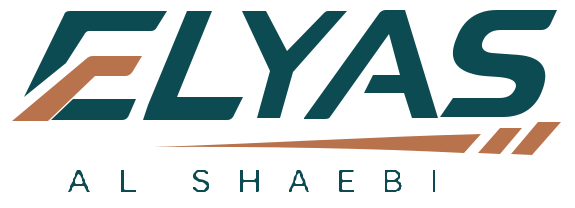
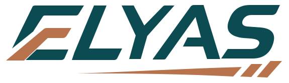
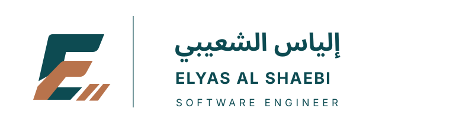
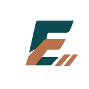
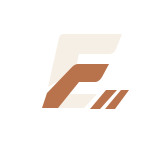
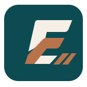
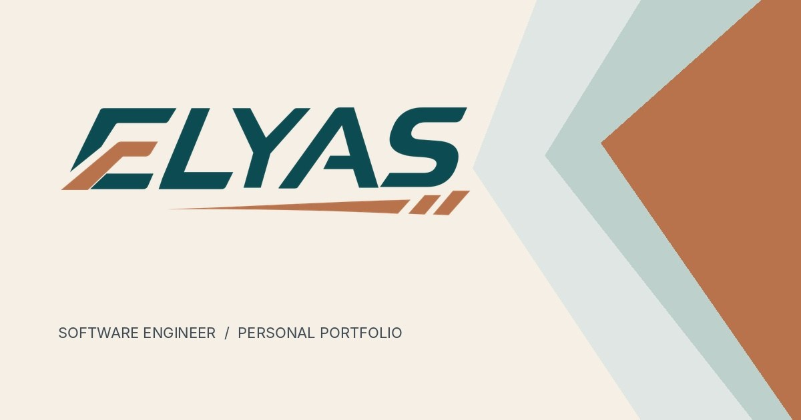

logo-primary.svg
هذه المعاينة تعرض أصول SVG الفعلية، دون إعادة رسم. الصور الملونة للهوية ثابتة، وملفات الحركة موجودة منفصلة.

logo-primary.svg

logo-reverse.svg

logo-compact.svg

logo-horizontal-ar-en.svg

mark-transparent.svg

mark-reverse-transparent.svg

favicon.svg

og-image.jpg
للاستخدام بالموقع: الأفضل SVG للشعار، وWebP/PNG للبدائل عند الحاجة.